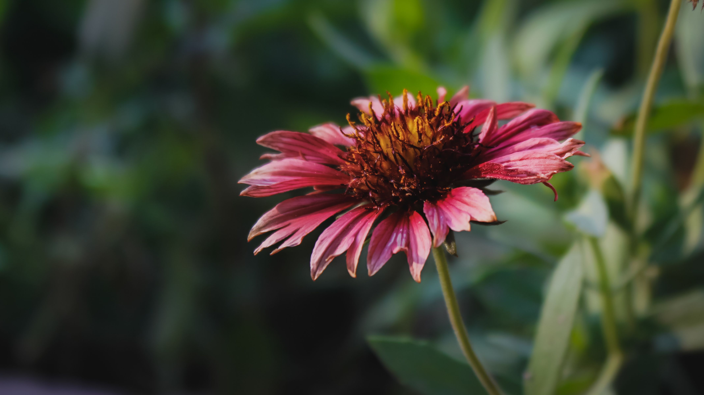

Different flowers have different colours, shapes and fragrances, which makes each one unique. Flowers also attract butterflies and other insects, making nature even more beautiful. They bring a feeling of happiness and peace and remind us to appreciate the beauty of nature.

I made this page to show the HTML homework I have completed so far. This page contains some of my previous HTML work and shows my progress in learning HTML. Learning HTML has been easy, fun and interesting for me. I have learned how to create a basic webpage, add headings, paragraphs, images and links.
This was my very first HTML webpage. In this homework, I introduced myself and wrote about my hobbies and interests. I learned how to use basic HTML tags such as headings, paragraphs and other elements to create a simple webpage. It was a good starting point for my HTML learning journey.
This was my second HTML webpage. In this homework, I wrote about input, output and storage devices. I learned how to use more advanced HTML tags such as lists, tables and images to create a more complex webpage. It was a great opportunity for me to practice my HTML skills and learn new techniques.
Looking ahead,
I want to learn more about HTML and improve my web development skills. I also want to learn CSS to make my webpages more attractive and JavaScript to add more features and interaction. I hope to create better and more interesting websites as I continue learning for now... Please continue to support my learning journey and dont judge me im still learning!..